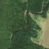
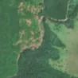

2,6 ha · Andreneasa, com. Răstolița
văzută schimbată prima dată pe 7 mai 2026


Autorizația cea mai apropiată nu acoperă tăierea: schimbarea cade în afara parcelei autorizate.
APV 2600157300810 · Ocolul Silvic Răstolița, la 199 m
Terenul: pădure de stat, după amenajamentul silvic publicat.
Ce se vede în poze: În poza detaliată și în «înainte» zona marcată este acoperită de pădure deasă de conifere. În «după» apar mai multe petice de pământ gol, roz-brun, în timp ce pădurea din jur rămâne verde, deci copacii au fost probabil tăiați sau doborâți.
în arie protejată: Călimani - Gurghiu